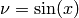
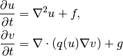

| Author: | Hans Petter Langtangen |
|---|---|
| Date: | Apr 27, 2011
|
If any of these questions are of interest, you should keep on reading.
Doconce is two things:
- Doconce is a very simple and minimally tagged markup language that look like ordinary ASCII text (much like what you would use in an email), but the text can be transformed to numerous other formats, including HTML, Wiki, LaTeX, PDF, reStructuredText (reST), Sphinx, Epytext, and also plain text (where non-obvious formatting/tags are removed for clear reading in, e.g., emails). From reStructuredText you can go to XML, HTML, LaTeX, PDF, OpenOffice, and from the latter to RTF and MS Word.
- Doconce is a working strategy for never duplicating information. Text is written in a single place and then transformed to a number of different destinations of diverse type (software source code, manuals, tutorials, books, wikis, memos, emails, etc.). The Doconce markup language support this working strategy. The slogan is: “Write once, include anywhere”.
A wide range of markup languages exist. For example, reStructuredText and Sphinx have recently become popular. So why another one?
- Doconce can convert to plain untagged text, more desirable for computer programs and email.
- Doconce has less cluttered tagging of text.
- Doconce has better support for copying in parts of computer code, say in examples, directly from the source code files.
- Doconce has stronger support for mathematical typesetting, and has many features for being integrated with (big) LaTeX projects.
- Doconce is almost self-explanatory and is a handy starting point for generating documents in more complicated markup languages, such as Google Wiki, LaTeX, and Sphinx. A primary application of Doconce is just to make the initial versions of a Sphinx or Wiki document.
Doconce was particularly written for the following sample applications:
- Large books written in LaTeX, but where many pieces (computer demos, projects, examples) can be written in Doconce to appear in other contexts in other formats, including plain HTML, Sphinx, or MS Word.
- Software documentation, primarily Python doc strings, which one wants to appear as plain untagged text for viewing in Pydoc, as reStructuredText for use with Sphinx, as wiki text when publishing the software at googlecode.com, and as LaTeX integrated in, e.g., a thesis.
- Quick memos, which start as plain text in email, then some small amount of Doconce tagging is added, before the memos can appear as MS Word documents or in wikis.
Disclaimer: Doconce is a simple tool, largely based on interpreting and handling text through regular expressions. The possibility for tweaking the layout is obviously limited since the text can go to all sorts of sophisticated markup languages. Moreover, because of limitations of regular expressions, some formatting may face problems when transformed to other formats.
Doconce text looks like ordinary text, but there are some almost invisible text constructions that allow you to control the formating. For example,
- bullet lists arise from lines starting with an asterisk,
- emphasized words are surrounded by asterisks,
- words in boldface are surrounded by underscores,
- words from computer code are enclosed in back quotes and then typeset verbatim,
- blocks of computer code can easily be included, also from source files,
- blocks of LaTeX mathematics can easily be included,
- there is support for both LaTeX and text-like inline mathematics,
- figures with captions, URLs with links, labels and references are supported,
- comments can be inserted throughout the text,
- with a simple preprocessor, which is integrated, one can include other documents (files) and large portions of text can be defined in or out of the text,
- with the Mako preprocessor one can even embed Python code and use this to steer generation of Doconce text.
Here is an example of some simple text written in the Doconce format:
===== A Subsection with Sample Text =====
label{my:first:sec}
Ordinary text looks like ordinary text, and the tags used for
_boldface_ words, *emphasized* words, and `computer` words look
natural in plain text. Lists are typeset as you would do in an email,
* item 1
* item 2
* item 3
Lists can also have automatically numbered items instead of bullets,
o item 1
o item 2
o item 3
URLs with a link word are possible, as in "hpl":"http://folk.uio.no/hpl".
If the word is URL, the URL itself becomes the link name,
as in "URL":"tutorial.do.txt".
References to sections may use logical names as labels (e.g., a
"label" command right after the section title), as in the reference to
Chapter ref{my:first:sec}.
Doconce also allows inline comments such as [hpl: here I will make
some remarks to the text] for allowing authors to make notes. Inline
comments can be removed from the output by a command-line argument
(see Chapter ref{doconce2formats} for an example).
Tables are also supperted, e.g.,
|--------------------------------|
|time | velocity | acceleration |
|--------------------------------|
| 0.0 | 1.4186 | -5.01 |
| 2.0 | 1.376512 | 11.919 |
| 4.0 | 1.1E+1 | 14.717624 |
|--------------------------------|
# lines beginning with # are comment lines
The Doconce text above results in the following little document:
Ordinary text looks like ordinary text, and the tags used for boldface words, emphasized words, and computer words look natural in plain text. Lists are typeset as you would do in an email,
- item 1
- item 2
- item 3
Lists can also have numbered items instead of bullets, just use an o (for ordered) instead of the asterisk:
- item 1
- item 2
- item 3
URLs with a link word are possible, as in hpl. If the word is URL, the URL itself becomes the link name, as in tutorial.do.txt.
References to sections may use logical names as labels (e.g., a “label” command right after the section title), as in the reference to the chapter A Subsection with Sample Text.
Doconce also allows inline comments such as (hpl: here I will make some remarks to the text) for allowing authors to make notes. Inline comments can be removed from the output by a command-line argument (see the chapter From Doconce to Other Formats for an example).
Tables are also supperted, e.g.,
| time | velocity | acceleration |
|---|---|---|
| 0.0 | 1.4186 | -5.01 |
| 2.0 | 1.376512 | 11.919 |
| 4.0 | 1.1E+1 | 14.717624 |
Inline mathematics, such as , allows the formula to be specified both as LaTeX and as plain text. This results in a professional LaTeX typesetting, but in other formats the text version normally looks better than raw LaTeX mathematics with backslashes. An inline formula like is typeset as
$\nu = \sin(x)$|$v = sin(x)$
The pipe symbol acts as a delimiter between LaTeX code and the plain text version of the formula.
Blocks of mathematics are better typeset with raw LaTeX, inside !bt and !et (begin tex / end tex) instructions. The result looks like this:
(1)
Of course, such blocks only looks nice in LaTeX. The raw LaTeX syntax appears in all other formats (but can still be useful for those who can read LaTeX syntax).
You can have blocks of computer code, starting and ending with !bc and !ec instructions, respectively. Such blocks look like
from math import sin, pi
def myfunc(x):
return sin(pi*x)
import integrate
I = integrate.trapezoidal(myfunc, 0, pi, 100)
It is possible to add a specification of a (ptex2tex-style) environment for typesetting the verbatim code block, e.g., !bc xxx where xxx is an identifier like pycod for code snippet in Python, sys for terminal session, etc. When Doconce is filtered to LaTeX, these identifiers are used as in ptex2tex and defined in a configuration file .ptext2tex.cfg, while when filtering to Sphinx, one can have a comment line in the Doconce file for mapping the identifiers to legal language names for Sphinx (which equals the legal language names for Pygments):
# sphinx code-blocks: pycod=python cod=py cppcod=c++ sys=console
By default, pro and cod are python, sys is console, while xpro and xcod are computer language specific for x in f (Fortran), c (C), cpp (C++), and py (Python). .. rb (Ruby), pl (Perl), and sh (Unix shell).
One can also copy computer code directly from files, either the complete file or specified parts. Computer code is then never duplicated in the documentation (important for the principle of avoiding copying information!). A complete file is typeset with !bc pro, while a part of a file is copied into a !bc cod environment. What pro and cod mean is then defined through a .ptex2tex.cfg file for LaTeX and a sphinx code-blocks comment for Sphinx.
Another document can be included by writing #include "mynote.do.txt" on a line starting with (another) hash sign. Doconce documents have extension do.txt. The do part stands for doconce, while the trailing .txt denotes a text document so that editors gives you the right writing enviroment for plain text.
Doconce supports a type of macros via a LaTeX-style newcommand construction. The newcommands defined in a file with name newcommand_replace.tex are expanded when Doconce is filtered to other formats, except for LaTeX (since LaTeX performs the expansion itself). Newcommands in files with names newcommands.tex and newcommands_keep.tex are kept unaltered when Doconce text is filtered to other formats, except for the Sphinx format. Since Sphinx understands LaTeX math, but not newcommands if the Sphinx output is HTML, it makes most sense to expand all newcommands. Normally, a user will put all newcommands that appear in math blocks surrounded by !bt and !et in newcommands_keep.tex to keep them unchanged, at least if they contribute to make the raw LaTeX math text easier to read in the formats that cannot render LaTeX. Newcommands used elsewhere throughout the text will usually be placed in newcommands_replace.tex and expanded by Doconce. The definitions of newcommands in the newcommands*.tex files must appear on a single line (multi-line newcommands are too hard to parse with regular expressions).
Recent versions of Doconce also offer cross referencing, typically one can define labels below (sub)sections, in figure captions, or in equations, and then refer to these later. Entries in an index can be defined and result in an index at the end for the LaTeX and Sphinx formats. Citations to literature, with an accompanying bibliography in a file, are also supported. The syntax of labels, references, citations, and the bibliography closely resembles that of LaTeX, making it easy for Doconce documents to be integrated in LaTeX projects (manuals, books). For further details on functionality and syntax we refer to the docs/manual/manual.do.txt file (see the demo page for various formats of this document).
Transformation of a Doconce document to various other formats applies the script doconce format:
Unix/DOS> doconce format format mydoc.do.txt
The preprocess program is always used to preprocess the file first, and options to preprocess can be added after the filename. For example,
Unix/DOS> doconce format LaTeX mydoc.do.txt -Dextra_sections
The variable FORMAT is always defined as the current format when running preprocess. That is, in the last example, FORMAT is defined as LaTeX. Inside the Doconce document one can then perform format specific actions through tests like #if FORMAT == "LaTeX".
Inline comments in the text are removed from the output by
Unix/DOS> doconce format LaTeX mydoc.do.txt remove_inline_comments
One can also remove such comments from the original Doconce file by running a helper script in the bin folder of the Doconce source code:
Unix/DOS> doconce remove_inline_comments mydoc.do.txt
This action is convenient when a Doconce document reaches its final form.
Making an HTML version of a Doconce file mydoc.do.txt is performed by
Unix/DOS> doconce format HTML mydoc.do.txt
The resulting file mydoc.html can be loaded into any web browser for viewing.
Making a LaTeX file mydoc.tex from mydoc.do.txt is done in two steps: .. Note: putting code blocks inside a list is not successful in many
Unix/DOS> doconce format LaTeX mydoc.do.txt
LaTeX-specific commands (“newcommands”) in math formulas and similar can be placed in files newcommands.tex, newcommands_keep.tex, or newcommands_replace.tex (see the section Macros (Newcommands), Cross-References, Index, and Bibliography). If these files are present, they are included in the LaTeX document so that your commands are defined.
Step 2. Run ptex2tex (if you have it) to make a standard LaTeX file,
Unix/DOS> ptex2tex mydoc
or just perform a plain copy,
Unix/DOS> cp mydoc.p.tex mydoc.tex
Doconce generates a .p.tex file with some preprocessor macros. For example, to enable font Helvetica instead of the standard Computer Modern font,
Unix/DOS> ptex2tex -DHELVETICA mydoc
The title, authors, and date are by default typeset in a non-standard way to enable a nicer treatment of multiple authors having institutions in common. The standard LaTeX “maketitle” heading is also available through
Unix/DOS> ptex2tex -DTRAD_LATEX_HEADING mydoc
The ptex2tex tool makes it possible to easily switch between many different fancy formattings of computer or verbatim code in LaTeX documents. After any !bc sys command in the Doconce source you can insert verbatim block styles as defined in your .ptex2tex.cfg file, e.g., !bc sys cod for a code snippet, where cod is set to a certain environment in .ptex2tex.cfg (e.g., CodeIntended). There are over 30 styles to choose from.
Step 3. Compile mydoc.tex and create the PDF file:
Unix/DOS> latex mydoc
Unix/DOS> latex mydoc
Unix/DOS> makeindex mydoc # if index
Unix/DOS> bibitem mydoc # if bibliography
Unix/DOS> latex mydoc
Unix/DOS> dvipdf mydoc
If one wishes to use the Minted_Python, Minted_Cpp, etc., environments in ptex2tex for typesetting code, the minted LaTeX package is needed. This package is included by running doconce format with the -DMINTED option:
Unix/DOS> ptex2tex -DMINTED mydoc
In this case, latex must be run with the -shell-escape option:
Unix/DOS> latex -shell-escape mydoc
Unix/DOS> latex -shell-escape mydoc
Unix/DOS> makeindex mydoc # if index
Unix/DOS> bibitem mydoc # if bibliography
Unix/DOS> latex -shell-escape mydoc
Unix/DOS> dvipdf mydoc
The -shell-escape option is required because the minted.sty style file runs the pygments program to format code, and this program cannot be run from latex without the -shell-escape option.
We can go from Doconce “back to” plain untagged text suitable for viewing in terminal windows, inclusion in email text, or for insertion in computer source code:
Unix/DOS> doconce format plain mydoc.do.txt # results in mydoc.txt
Going from Doconce to reStructuredText gives a lot of possibilities to go to other formats. First we filter the Doconce text to a reStructuredText file mydoc.rst:
Unix/DOS> doconce format rst mydoc.do.txt
We may now produce various other formats:
Unix/DOS> rst2html.py mydoc.rst > mydoc.html # HTML
Unix/DOS> rst2latex.py mydoc.rst > mydoc.tex # LaTeX
Unix/DOS> rst2xml.py mydoc.rst > mydoc.xml # XML
Unix/DOS> rst2odt.py mydoc.rst > mydoc.odt # OpenOffice
The OpenOffice file mydoc.odt can be loaded into OpenOffice and saved in, among other things, the RTF format or the Microsoft Word format. That is, one can easily go from Doconce to Microsoft Word.
Sphinx documents can be created from a Doconce source in a few steps.
Step 1. Translate Doconce into the Sphinx dialect of the reStructuredText format:
Unix/DOS> doconce format sphinx mydoc.do.txt
Step 2. Create a Sphinx root directory with a conf.py file, either manually or by using the interactive sphinx-quickstart program. Here is a scripted version of the steps with the latter:
mkdir sphinx-rootdir
sphinx-quickstart <<EOF
sphinx-rootdir
n
_
Name of My Sphinx Document
Author
version
version
.rst
index
n
y
n
n
n
n
y
n
n
y
y
y
EOF
These statements are automated by the command
Unix/DOS> doconce sphinx_dir mydoc.do.txt
Step 3. Move the tutorial.rst file to the Sphinx root directory:
Unix/DOS> mv mydoc.rst sphinx-rootdir
If you have figures in your document, the relative paths to those will be invalid when you work with mydoc.rst in the sphinx-rootdir directory. Either edit mydoc.rst so that figure file paths are correct, or simply copy your figure directory to sphinx-rootdir (if all figures are located in a subdirectory).
Step 4. Edit the generated index.rst file so that mydoc.rst is included, i.e., add mydoc to the toctree section so that it becomes
.. toctree::
:maxdepth: 2
mydoc
(The spaces before mydoc are important!)
Step 5. Generate, for instance, an HTML version of the Sphinx source:
make clean # remove old versions
make html
Many other formats are also possible.
Step 6. View the result:
Unix/DOS> firefox _build/html/index.html
Note that verbatim code blocks can be typeset in a variety of ways depending the argument that follows !bc: cod gives Python (code-block:: python in Sphinx syntax) and cppcod gives C++, but all such arguments can be customized both for Sphinx and LaTeX output.
There are several different wiki dialects, but Doconce only support the one used by Google Code. The transformation to this format, called gwiki to explicitly mark it as the Google Code dialect, is done by
Unix/DOS> doconce format gwiki mydoc.do.txt
You can then open a new wiki page for your Google Code project, copy the mydoc.gwiki output file from doconce format and paste the file contents into the wiki page. Press Preview or Save Page to see the formatted result.
When the Doconce file contains figures, each figure filename must be replaced by a URL where the figure is available. There are instructions in the file for doing this. Usually, one performs this substitution automatically (see next section).
Occasionally, one would like to tweak the output in a certain format from Doconce. One example is figure filenames when transforming Doconce to reStructuredText. Since Doconce does not know if the .rst file is going to be filtered to LaTeX or HTML, it cannot know if .eps or .png is the most appropriate image filename. The solution is to use a text substitution command or code with, e.g., sed, perl, python, or scitools subst, to automatically edit the output file from Doconce. It is then wise to run Doconce and the editing commands from a script to automate all steps in going from Doconce to the final format(s). The make.sh files in docs/manual and docs/tutorial constitute comprehensive examples on how such scripts can be made.
The current text is generated from a Doconce format stored in the file
docs/tutorial/tutorial.do.txt
The file make.sh in the tutorial directory of the Doconce source code contains a demo of how to produce a variety of formats. The source of this tutorial, tutorial.do.txt is the starting point. Running make.sh and studying the various generated files and comparing them with the original tutorial.do.txt file, gives a quick introduction to how Doconce is used in a real case. Here is a sample of how this tutorial looks in different formats.
There is another demo in the docs/manual directory which translates the more comprehensive documentation, manual.do.txt, to various formats. The make.sh script runs a set of translations.
If you make use of preprocessor directives in the Doconce source, either Preprocess or Mako must be installed. To make LaTeX documents (without going through the reStructuredText format) you also need ptex2tex and some style files that ptex2tex potentially makes use of. Going from reStructuredText to formats such as XML, OpenOffice, HTML, and LaTeX requires docutils. Making Sphinx documents requires of course Sphinx. All of the mentioned potential dependencies are pure Python packages which are easily installed.
Doconce can be viewed is a unified interface to a variety of typesetting formats. This interface is minimal in the sense that a lot of typesetting features are not supported, for example, footnotes and bibliography. For many documents the simple Doconce format is sufficient, while in other cases you need more sophisticated formats. Then you can just filter the Doconce text to a more approprite format and continue working in this format only. For example, reStructuredText is a good alternative: it is more tagged than Doconce and cannot be filtered to plain, untagged text, or wiki, and the LaTeX output is not at all as clean, but it also has a lot more typesetting and tagging features than Doconce.